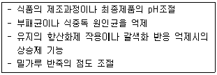
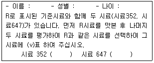
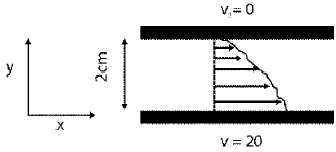
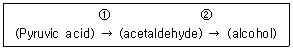
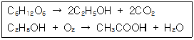

식품기사 (2013-03-10 기출문제)
1과목: 식품위생학
1. 다음 중 기생충질환과 중간숙주의 연결이 잘못된 것은?
- 유구조충 - 돼지
- 무구조충 - 양서류
- 회충 - 채소
- 간흡충 - 민물고기
(정답률: 90%)

2. 인수공통감염병과 관계가 먼 것은?
- 결핵
- 탄저병
- 이질
- Q열
(정답률: 81%)
3. 식품의 생균수 실험에 관한 설명 중 틀린 것은?(관련 규정 개정전 문제로 여기서는 기존 정답인 3번을 누르면 정답 처리됩니다. 자세한 내용은 해설을 참고하세요.)
- Colony수가 30 ~ 300개 범위의 평판을 선택하여 균수계산을 한다.
- 표준 한천 평판배지를 사용한다.
- 주로 Howard 법으로 검사한다.
- 식품의 현재 오염정도나 부패진행도를 알 수 있다.
(정답률: 82%)
4. 다음 중 일반적인 식품의 신선도에 대한 지표로 사용되기에 가장 적합한 것은?
- 일반세균수
- 대장균군수
- 대장균수
- 병원성 대장균수
(정답률: 75%)
5. 식품공전에 의한 페놀프탈레인시액 규정은?
- 페놀프탈레인 1g을 에탄올 10mL에 녹인다.
- 페놀프탈레인 1g을 에탄올 100mL에 녹인다.
- 페놀프탈레인 1g을 에탄올 1000mL에 녹인다.
- 페놀프탈레인 1g을 에탄올 10000mL에 녹인다.
(정답률: 85%)
6. 식중독을 일으키는 세균과 바이러스에 대한 설명으로 틀린 것은?
- 세균은 온도, 습도, 영양성분 등이 적정하면 자체 증식이 가능하다.
- 바이러스에 의한 식중독은 미량(10 ~ 100)의 개체로도 발병이 가능하다.
- 독소형 식중독은 감염형 식중독에 비해 비교적 잠복기가 짧다.
- 바이러스에 의한 식중독은 일반적인 치료법이나 백신이 개발되어 있다.
(정답률: 87%)
7. LD50 으로 독성을 표현하는 것은?
- 급성독성
- 만성독성
- 발암성
- 변이원성
(정답률: 90%)
8. 부패 미생물의 성장에 영향을 미칠 수 있는 식품의 내적인자가 아닌 것은?(오류 신고가 접수된 문제입니다. 반드시 정답과 해설을 확인하시기 바랍니다.)
- pH
- 산화환원전위
- 상대습도
- 수분활성도
(정답률: 57%)
9. 다음 중 신경장애 증상을 나타내는 식중독균은?
- 보툴리늄균
- 살모넬라균
- 장염비브리오균
- 포도상구균
(정답률: 85%)
10. 식품의 신선도 측정시 실시하는 검사가 아닌 것은?
- 휘발성염기질소(VBN)
- 당도
- 트리메탈아민(TMA)
- 생균수
(정답률: 90%)
11. 방사선조사식품에 대한 설명으로 틀린 것은?
- 식품을 일정시간 동안 이온화에너지에 노출시킨다.
- 발아억제, 숙도지연, 보존성향상, 기생충 및 해충 사멸 등의 효과가 있다.
- 일반적으로 식품을 포장하기 전에 처리한다.
- 방사선량의 단위는 Gy, kGy이며, 1Gy는 1 J/kg과 같다
(정답률: 82%)
12. 다음과 같은 목적과 기능을 하는 식품 첨가물은?

- 산미료
- 조미료
- 호료
- 유화제
(정답률: 84%)
13. 미량으로 발암이나 만성중독을 유발시키는 화학물질 중 상수원 물의 오염이 문제가 되는 것은?
- 아질산염(N-nitrosamine)
- 메틸알코올(methyl alcohol)
- 트리할로메탄(trihalomethane, THM)
- 이환방향족아민류(heterocylic amines)
(정답률: 87%)
14. 트리할로메탄(trihalomethane)에 대한 설명으로 틀린 것은?
- 수도용 원수의 염소 처리 시에 생성되며 발암성 물질로 알려져 있다.
- 생성량은 물속에 있는 총유기성 탄소량에는 반비례하나 화학적 산소요구량과는 무관하다.
- 메탄의 4개 수소 중 3개가 할로겐 원자로 치환된 것이다.
- 전구물질을 제거하거나 생성된 것을 활성탄 등으로 처리하여 제거할 수 있다.
(정답률: 81%)
15. 식품의 변질에 대한 설명으로 틀린 것은?
- 변패(deterioration) : 미생물 및 효소 등에 의하여 탄수화물, 지방질 및 단백질이 분해되어 산미를 형성하는 현상
- 부패(putrefaction) : 단백질과 질소화합물을 함유한 식품이 자가소화, 부패세균의 효소작용으로 의해 분해되는 현상
- 산패(rancidity) : 지방질이 생화학적 요인 또는 산소, 햇볕, 금속 등의 화학적 요인으로 인하여 산화·변질되는 현상
- 갈변(browning) : 효소적 또는 비효소적 요인에 의하여 식품이 산화·갈색화되는 현상
(정답률: 87%)
16. 세균성이질에 대한 설명 중 틀린 것은?
- 원인균은 Entamoeba histolytica 이다.
- 잠복기는 1 ~ 3일이다.
- 원인균은 60℃에서 10분 가열로 사멸된다.
- 일반 증상은 식욕부진, 복통, 고열, 설사 등이다.
(정답률: 74%)
17. 식품의 기준 및 규격 고시 총칙으로 틀린 것은?
- 따로 규정이 없는 한 찬물은 15℃이하, 온탕 60 ~ 70℃, 열탕은 약 100℃의 물이다.
- 상온은 20℃, 표준온도는 15 ~ 25℃, 실온은 1 ~ 30℃ 미온은 35 ~ 40℃로 한다.
- 차고 어두운 곳(냉암소)이라 함은 따로 규정이 없는 한 0 ~ 15℃의 빛이 차단된 장소를 말한다.
- 감압은 따로 규정이 없는 한 15mmHg 이하로 한다.
(정답률: 85%)
18. 다음 중 수용성인 산화방지제는?
- Ascorbic acid
- Butylated hydroxy anisole(BHA)
- Butylated hydroxy toluene(BHT)
- Propyl gallate
(정답률: 87%)
19. 감미료와 거리가 먼 식품첨가물은?
- 스테비오사이드(stevioside)
- 아스파탐(aspartame)
- 아디픽산(adipic acid)
- D-솔비톨(sorbitol)
(정답률: 73%)
20. 식중독의 발생동향이 아닌 것은?
- 독성물질에 의한 식중독이 건수와 환자수는 많으나 사망률은 세균성 식중독이 훨씬 높다.
- 집단급식과 외식의 증가로 건수와 환자수가 증가하고 있다.
- 지구 온난화로 인한 기온 상승으로 식중독 발생이 지속적으로 증가할 것으로 예상된다.
- 음식점은 병원성대장균, 장염비브리오, 황색포도상 구균, 노로바이러스 등에 의해 주로 발생한다.
(정답률: 84%)
2과목: 식품화학
21. 된장국물 등과 같이 분산상이 고체이고 분산매가 액체인 콜로이드 상태를 무엇이라 하는가?
- 진용액
- 유화액
- 졸(sol)
- 겔(gel)
(정답률: 77%)
22. 아래의 관능검사 질문지는 어떤 관능검사인가?

- 단순차이검사
- 일-이점 검사
- 삼점검사
- 이점비교검사
(정답률: 83%)
23. BHA, BHT와 같은 항산화제(antioxidant)의 작용과 거리가 먼 것은?
- 주로 산화의 연쇄반응을 중단시키는 역할을 한다.
- 자신은 산화된다.
- 산패가 진행된 유지에 첨가해도 그 효과는 저하되지 않는다.
- 일반적으로 단독 사용할 때보다 병용 사용할 때 그 작용이 증강된다.
(정답률: 81%)
24. GC와 HPLC에 대한 설명으로 틀린 것은?
- GC는 주로 휘발성 물질의 분석에, HPLC는 비휘발성 물질의 분석에 활용된다.
- GC는 이동상이 기체이고, HPLC는 이동상이 액체이다.
- HPLC는 GC보다 시료 회수가 어렵다.
- 일반적으로 GC의 민감도가 HPLC보다 높다.
(정답률: 84%)
25. 유지의 굴절율에 대한 설명으로 옳은 것은?
- 불포화도와 굴절율은 상관관계가 없다.
- 불포화도가 클수록 굴절율은 감소한다.
- 분자량과 굴절율은 상관관계가 없다.
- 분자량이 클수록 굴절율은 증가한다.
(정답률: 78%)
26. 채소류의 열처리 공정이나 통조림 제조시 나타날 수 있는 변화가 아닌 것은?
- 채소류를 60 ~ 100℃에서 수분간 데치는 공정을 거치면 녹색이 진해진다.
- 채소류를 산으로 처리하면 색깔이 갈색으로 변한다.
- 채소류를 알칼리와 반응시키면 청록색으로 된다.
- 채소를 높은 온도에서 오랜 기간 가열하더라도 구리를 첨가하면 갈색으로 변한다.
(정답률: 75%)
27. 어떤 단백질의 등전점보다 높은 pH에서 그 단백질은 어느 성질을 보이는가?
- 주로 양이온과 결합한다.
- 주로 음이온과 결합한다.
- 양이온과 음이온 모두 결합할 수 있다.
- 어떤 이온과도 결합하지 않는다.
(정답률: 65%)
28. 관능검사 중 묘사분석법의 종류가 아닌 것은?
- 향미 프로필
- 텍스처 프로필
- 질적 묘사분석
- 양적 묘사분석
(정답률: 62%)
29. 전분의 노화에 대한 설명 중 틀린 것은?
- 전분의 노화는 0℃에서 잘 일어나지 않는다.
- 노화된 전분은 소화가 잘된다.
- 노화란 α-strach가 β-strach로 되는 것을 말한다.
- 노화는 전분 분자끼리의 결합이 점차 늘어나기 때문에 일어난다.
(정답률: 78%)
30. 포도당(glucose)을 질산과 같은 강산과 함께 가열하면 어떤 화합물이 만들어 지는가?
- gluconic acid
- glucaric acid
- glucuronic acid
- glucitol
(정답률: 43%)
31. 호화전분의 물리적 성질이 아닌 것은?
- 부피의 팽윤
- 색소 흡수 능력의 감소
- 용해성의 증가
- thixotropic gel의 성질을 나타낸다.
(정답률: 66%)
32. 다음 중 탄소의 수가 5개인 당알코올은?
- 자일리톨
- 만니톨
- 에리스리톨
- 솔비톨
(정답률: 77%)
33. 효소에 의한 과실 및 채소의 갈변을 억제하는 방법으로 가장 관계가 먼 것은?(오류 신고가 접수된 문제입니다. 반드시 정답과 해설을 확인하시기 바랍니다.)
- 데치기(blanching)
- 2% 소금물에 담금
- NaHCO3 용액에 처리
- 설탕으로 처리
(정답률: 67%)
34. 환원성 당류로 단맛을 내는 저칼로리 감미료로 이용되는 물질은?
- 배당체(glycoside)
- 전분
- 당알코올(sugar alcohol)
- 글리코겐(glycogen)
(정답률: 82%)
35. 식품산업에서 관능검사의 응용범위 중 가장 거리가 먼 것은?
- 신제품 개발
- 공정개선 및 원가절감
- 관능검사용 패널 선정
- 품질변화가 거의 없는 시료
(정답률: 78%)
36. 그림과 같이 y축 방향으로 2cm 떨어져서 평행하게 놓여진 두 평면 사이에 에탄올(μ1.77cP, 0℃)이 담겨져 있다. 밑면을 20cm/s의 속도로 x축 방향으로 움직일 때 y축 방향으로 작용하는 전단 응력은?

- 0.177 dyne/cm2
- 0.354 dyne/cm2
- 0.531 dyne/cm
- 0.708 dyne/cm2
(정답률: 56%)
37. 식품에 외부에서 힘을 가했을 때 식품의형태가 변형되었다가 다시 가해진 압력을 제거하면 원래의 모습으로 돌아가려는 성질은?
- 정탄성
- 탄성
- 소성
- 항복치
(정답률: 77%)
38. CuSO4의 알칼리 용액에 다음 당을 넣고 가열할 때 Cu2O의 붉은색 침전이 생기지 않는 당은?
- maltose
- sucrose
- lactose
- glucose
(정답률: 74%)
39. 산패의 유형 분류 또는 설명의 연결이 잘못된 것은?
- 산화형 산패 : 유지가 산소를 흡수함으로써 일어남
- 산화형 산패 : 자동산화는 효소에 의함
- 비산화형 산패 : 가수분해형 산패
- 비산화형 산패 : 케톤 생성형 산패
(정답률: 62%)
40. 소수성 아미노산인 L-leucine의 맛과 유사한 것은?
- 3.0% 포도당의 단맛
- 1.0% 소금의 짠맛
- 0.5% malic acid의 신맛
- 0.1% caffeine의 쓴맛
(정답률: 79%)
3과목: 식품가공학
41. 육연화제에 사용되는 효소로 부적합한 것은?
- 파파인(papain)
- 피친(ficin)
- 브로멜린(bromelin)
- 라파아제(lapase)
(정답률: 73%)
42. 달걀의 신선도 검사와 직접 관계가 없는 감정법은?
- 투시 검란법
- 비중 선별법
- 난황계수 측정법
- 중량 측정법
(정답률: 77%)
43. "탈검, 탈산, 탈색, 탈취" 공정과 관계가 있는 것은?
- 유지의 정제
- 유지의 추출
- 소맥분의 정제
- 경화유 제조
(정답률: 79%)
44. 냉동회로 중 기체의 단열압축 과정에 대한 설명으로 옳은 것은?
- enthalpy만 일정하다.
- entropy만 일정하다.
- enthalphy 와 entropy 모두 일정하다
- enthalpy 와 entropy 모두 변화한다.
(정답률: 60%)
45. 고온 고압 살균을 요하지 않는 것은?
- 아스파라가스 통조림
- 양송이 통조림
- 감자 통조림
- 복숭아 통조림
(정답률: 73%)
46. 어류의 비린맛에 대한 설명으로 옳은 것은?
- 생선이 죽으면 트리메틸아민옥시드(trimethylamineoxide)가 트리메틸아민(trimethylamine)으로 변하여 생선 비린내가 난다.
- 생선이 죽으면 트리메틸아민이 트리메틸아민옥시드로 변하여 생선 비린내가 난다.
- 생선 비린내 성분은 특히 담수어에 많이 함유된다.
- 생선 비린내는 주로 관능검사법으로 품질 관리한다.
(정답률: 78%)
47. 콩 단백질의 특성과 관계가 없는 것은?
- 콩 단백질은 묽은 염류용액에 용해된다.
- 콩을 수침하여 물과 함께 마쇄하면, 인산칼륨 용액에 콩 단백질이 용출된다.
- 콩 단백질은 90%가 염류용액에 추출되며, 이중 80% 이상이 glycinin이다.
- 콩단백질의 주성분인 glycinin은 양(+)전하를 띠고 있다.
(정답률: 77%)
48. 유지 채취 시 전처리 방법이 아닌 것은?
- 정선
- 탈각
- 파쇄
- 추출
(정답률: 70%)
49. 식품 저장 시 방사선 조사에 의한 효과가 아닌 것은?
- 곡류 식품의 살충
- 과실, 채소, 육류 식품의 살균
- 감자, 양파 등의 발아 촉진
- 과실, 채소 등의 숙도 조정
(정답률: 82%)
50. 수분활성도와 관련된 설명으로 틀린 것은?
- 수분활성도는 수분함량보다 식품 미생물의 생육 가능성을 더 잘 나타낸다.
- 등온흡습곡선은 식품 중의 물의 존재 상태를 나타낸다.
- 수분활성도가 낮을수록 산패가 억제된다.
- 식품의 수분활성도는 1보다 작다.
(정답률: 63%)
51. 프락토올리고당(fructooligosaccharide)에 대한 설명으로 틀린 것은?(오류 신고가 접수된 문제입니다. 반드시 정답과 해설을 확인하시기 바랍니다.)
- 설탕에 invertase를 사용하여 제조한다.
- 1개의 포도당에 과장이 2 - 4개 결합된 3 - 5당류를 말한다.
- 프락토올리고당 생산에 사용되는 효소는 Aspergillus Niger가 생산하는 효소를 사용한다.
- 현재는 고정화효소 또는 고정화 균체를 사용하여 생산한다.
(정답률: 40%)
52. 마요네즈 제조 시 유화제 역할을 하는 것은?
- 난황
- 식초산
- 식용유
- 소금
(정답률: 86%)
53. 장류의 식품유형이 아닌 것은?
- 고추장
- 산분해간장
- 발효식초
- 개량메주
(정답률: 83%)
54. 치즈 제조에 쓰이는 응유 효소는?
- 레넷(rennet)
- 펩신(pepsin)
- 파파인(papain)
- 브로멜린(bromelin)
(정답률: 85%)
55. 미국에서 생산된 냉동감자 1container 분량의 무게(weight)가 355856 N일 때, 냉동감자의 질량(1 container 분량)을 kg 단위로 계산하면 약 몇 kg인가? (단, 이 지역에서의 중력가속도(Gravitational acceleration of gravity. g)는 9.8024 m/s2이고 중력환산계수(gc)는 1 kg·m/N·s2이다.)
- 3488243 kg
- 36303 kg
- 355856 kg
- 35586 kg
(정답률: 54%)
56. 메톡실(methoxyl)기 함량이 7% 이하인 펙틴(pectin)의 경우 젤리(jelly) 강도를 높이기 위해 첨가해야 할 물질은?
- 설탕
- 구연산
- 칼슘
- 글리세린
(정답률: 71%)
57. 염장 간고등어의 저장 원리는?
- 삼투압
- 건조
- 진공
- 훈연
(정답률: 88%)
58. 표준상태(0℃, 1기압)에서 진공도가 36 cmHg인 통조림이 같은 온도의 (70 cmHg) 상태인 산위에서의 그 진공도가 얼마가 되는가?
- 24 cmHg
- 30 cmHg
- 36 cmHg
- 40 cmHg
(정답률: 48%)
59. 우유 살균법으로 가장 실용적인 방법은?
- 고온순간 살균법
- 방사선 살균법
- 냉온 살균법
- 가압 살균법
(정답률: 87%)
60. 피부건강에 도움을 주는 건강기능식품 기능성 원료(고지형 원료)가 아닌 것은?
- 알로에 겔
- 비타민 E
- 엽록소 함유 식물
- 클로렐라
(정답률: 60%)
4과목: 식품미생물학
61. 미생물의 증식곡선에 있어서 가장 왕성하게 균수가 증식하는 경우는?
- 유도기
- 대수기
- 정상기
- 사멸기
(정답률: 84%)
62. 비타민 B12를 생육인자로 요구하여 비타민 B12의 미생물적인 정량법에 이용되는 균주는?
- Staphylococcus aureus
- Bacillus cereus
- Lactobacillus leichmanii
- Escherichia coli
(정답률: 67%)
63. 원핵세포에 대한 설명 중 틀린 것은?
- 모든 세균은 진핵생물이고 원핵생물에 비해 복잡한 구조를 이룬다.
- 세포막이나 다른 생체막은 지질이중층에 단백질이 삽입되어 있는 형태로 이루어졌다.
- 그람 음성균의 세포벽은 펩티도글리칸(peptidoglycan)과 지질다당체 및 단백질로 이루어져 있다.
- 세포질에는 봉입체와 리보솜이 들어 있다.
(정답률: 77%)
64. 미생물 세포의 구성성분에 대한 설명 중 틀린 것은?
- 미생물 세포의 탄수화물은 세포벽이나 핵산과 결합한다.
- 미생물 세포의 가장 많이 차지하고 있는 성분은 수분이고, 대부분이 자유수로 존재한다.
- 미생물 세포의 무기질 중 가장 많이 함유되어 있는 것은 마그네슘(Mg)이다.
- 미생물 세포의 성분 조성은 생육의 시기, 배양 조건에 따라 다르다.
(정답률: 65%)
65. 실모양의 균사가 분지하여 방사상으로 성장하는 특징이 있는 미생물로 다양한 항생물질을 생산하는 균은?
- 초산균
- 방선균
- 프로피온산균
- 연쇄상구균
(정답률: 84%)
66. 다음 중 그람 양성 세균은?
- 슈도모나스(Pseudomonas spp.)
- 락토바실러스(Lactobacillus spp.)
- 대장균(Escherichia spp.)
- 살모넬라균(Salmonella spp.)
(정답률: 67%)
67. Aspergillus 속에 속하는 곰팡이에 대한 설명으로 틀린 것은?
- A. oryzae는 단백질 분해력과 전분 당화력이 강하여 주류 또는 장류 양조에 이용된다.
- A. glaucus군에 속하는 곰팡이는 백색집락을 이루며 ochratoxin을 생산한다.
- A. niger는 대표적인 흑국균이다.
- A. flavus는 aflatoxin을 생산한다.
(정답률: 75%)
68. 제한효소(restriction enzyme)를 올바르게 설명한 것은?
- DNA 조각들을 연결시키는 효소
- 특정 염기서열을 가진 소량의 DNA 단편을 대량 합성하는데 사용되는 효소
- 최종산물의 존재에 의해 활성이 억제·제한되는 효소
- DNA의 두가닥 사슬의 특정 염기배열을 식별하여 절단 하는 효소
(정답률: 71%)
69. 다음 미생물 대사산물 중 혐기성 세균에 의해서만 생성되는 것은?
- acetic acid, ethanol
- citric acid, ethanol
- propionic acid, butanol
- glutamic acid, butanol
(정답률: 64%)
70. 산막효모의 특징이 아닌 것은?
- 산소를 요구한다.
- 산화력이 강하다.
- 액의 내부에서 발육한다.
- 피막을 형성한다.
(정답률: 80%)
71. 일반적으로 할로겐 원소 등의 살균제에 대하여 가장 강한 내성을 가지고 있는 것은?
- 바이러스
- 그람음성세균
- 그람양성세균
- 포자
(정답률: 81%)
72. 제조공정에서 박테리아파아지에 의한 오염이 발생하지 않는 것은?
- 낙농식품 발효
- 젖산(lactic acid) 발효
- 아세톤-부탄올(acetone-butanol) 발효
- 맥주 발효
(정답률: 76%)
73. 효모의 대표적인 증식방법으로 세포에 생긴 작은 돌기가 커지면서 새로운 자세포가 생성되는 방법은?
- 출아
- 사출
- 세포분열
- 접합
(정답률: 83%)
74. 절인생선, 건포도, 잼 등과 같은 식품에는 호염성 세균, 곰팡이 및 효모가 주로 생육하여 식품을 부패하게 한다. 이 때 이 미생물들이 생육하기 위해 요구되는 최소한의 수분활성도의 범위는
- 0.95 ~ 0.99
- 0.90 ~ 0.95
- 0.61 ~ 0.90
- 0.61이하
(정답률: 78%)
75. 다음은 알코올 발효과정의 일부 반응이다. ①,②에 관여되는 보효소는?

- ① Tpp, ② NAD
- ① NADP, ② NAD
- ① Tpp, ② FAD
- ① NADP, ② FAD
(정답률: 67%)
76. 유전자 조작에 이용되는 벡터(vector)로서의 중요한 고려사항이 아닌 것은?
- 세포내에서의 자가복제성 유무
- 사용되는 제한효소에 의해 절단되는 방식
- 재조합 DNA를 검출하기 위한 마커유전자
- 수용세포 유전자 발현 방식
(정답률: 67%)
77. Brevibacterium ammoniagenes를 변이시켜 adenine 요구 균주를 분리하였다. adenine 요구 균주의 성질에 대한 설명으로 틀린 것은?
- 완전 배지에 잘 자란다.
- 최소배지에 adenine을 첨가한 배지에서 자란다.
- 최소배지에 adenine을 첨가하거나 하지 않았거나 관계없이 자란다.
- 최소배지에 adenine과 guanine을 첨가한 배지에서 자란다.
(정답률: 72%)
78. 현미경에 배율이 10배인 대안렌즈와 배율이 45배인 대물렌즈를 꼈을 때 전제적인 배율은?
- 4.5배
- 45배
- 450배
- 4500배
(정답률: 83%)
79. 효소 중 유기산 생성에 이용되며 강력한 발암물질인 aflatoxin을 생성하는 것은?
- Aspergillus 속
- Fusarium 속
- Saccharomyces 속
- Penicillum 속
(정답률: 82%)
80. 수확 직후의 쌀에 빈번한 곰팡이로 저장 중 점차 감소되어 쌀의 변질에는 거의 관여하지 않는 것으로만 묶여진 것은?
- Alternaria, Fusarium
- Aspergillus, Penicillium
- Alternaria, Penicillium
- Aspergillus, Fusarium
(정답률: 50%)
5과목: 생화학 및 발효학
81. biotin 과잉배지에서 glutamic acid 발효 시 첨가하는 물질은?
- vitamin B12
- thiamin
- penicillin
- vitamin C
(정답률: 64%)
82. 다음 중 에너지 생성 반응이 아닌 것은?
- 광합성 반응
- 산화적 인산화 반응
- 당 신생 반응
- 기질수준 인산화 반응
(정답률: 66%)
83. 광합성에서 CO2가 탄수화물로 환원되는 반응은?
- 탄소동화반응(cabon-assimilation reaction)
- 명반응(light reaction)
- NADPH와 ATP를 생산하는 반응
- 산소에 의존하는 반응
(정답률: 61%)
84. 지방산 분해에 대한 설명으로 틀린 것은?
- 트리아실글리세롤은 호르몬으로 자극된 지방질 가수분해효소로 가수분해된다.
- 지방산은 산화되기 전에 Coenzyme A에 연결된다.
- 팔미트산의 완전 산화로 100분자의 ATP를 생성한다.
- 카르니틴은 활성화된 긴 사슬 지방산들을 미토콘드리아기질 안으로 운반한다.
(정답률: 76%)
85. 밥과 누룩을 잘 섞은 다음 30℃에서 발효시켰더니 2 ~ 3일 후에 가스가 나오기 시작하였다. 이 가스의 주 성분은?
- CO2
- NH3
- H2
- O2
(정답률: 83%)
86. 조류에 있어서 퓨린대사는 어떻게 되는가?
- 소변을 배설하지 않기 때문에 퓨린을 배설하지 않고 다른 화합물로 이용한다.
- 소변을 배설하지 않고 퓨린을 요산으로 분해하여 대변과 함께 배설한다.
- 아주 소량씩 소변으로 배설한다.
- 조류는 핵산대사 능력이 없어 그대로 대변으로 배설한다.
(정답률: 81%)
87. 내열성 alkaline protease 생산에 이용되는 미생물은?
- Aspergillus 속 균주
- Bacillus 속 균주
- Pseudomonas 속 균주
- Streptomyces 속 균주
(정답률: 46%)
88. 포도당을 영양원으로 젖산(lactic acid)를 생산할 수 없는 균주는?
- Pediococcus lindneri
- Leuconostoc mesenteroides
- Rhizopus oryzae
- Aspregillus niger
(정답률: 49%)
89. 포도당(glucose) 1kg을 사용하여 알코올발효와 초산발효를 동시에 진행시켰다. 알코올과 초산의 실제 생산수율은 각각의 이론적 수율의 90%와 85%라고 가정할 때 실제 생산될 수 있는 초산의 양은?
- 1.304kg
- 1.1084kg
- 0.5097kg
- 0.4821kg
(정답률: 45%)
90. pyrimidine 유도체로서 핵산 중에 존재하지 않는 것은?
- cytosine
- urasil
- thymine
- ademine
(정답률: 60%)
91. 아미노산에 대한 설명으로 틀린 것은?
- 산, 염기의 성질을 동시에 지니고 있다.
- 부제 탄소원자(asymmetric carbon atom)는 가지고 있지 않다.
- 곁사슬의 화학적 구조에 따라 성질이 다르다.
- 중합할 수 있는 능력을 가지고 있다.
(정답률: 82%)
92. 단백질의 생합성이 이루어지는 장소는
- 미토콘드리아(mitochondria)
- 리보솜(ribosome)
- 핵(nucleus)
- 세포막(membrane)
(정답률: 83%)
93. 효소의 반응속도에 영향을 미치는 요소와 가장 거리가 먼 것은?
- 온도
- 수소이온농도
- 기질의 농도
- 반응액의 용량
(정답률: 79%)
94. prostagiandin의 생합성에 이용되는 지방산은?
- stearic acid
- oleic acid
- arachidonic acid
- palmitic acid
(정답률: 64%)
95. 맥주발효에 적합한 원료 보리의 품질로서 옳은 것은?
- 질소성분 함량이 적고 탄수화물 함량이 많은 보리
- 질소, 지방, 탄수화물의 함량이 적은 보리
- 질소와 지방 함량이 많고 탄수화물 함량이 적은 보리
- 질소성분과 탄수화물 함량이 모두 많은 보리
(정답률: 74%)
96. 설탕을 기질로 하여 덱스트랜(dextran)을 공업적으로 생성하는 젖산균은?
- pediococcus lindneri
- streptococcus cremoris
- lactobacillus bulgaricus
- leuconostoc mesenteroides
(정답률: 68%)
97. 연속배양의 장점이 아닌 것은?
- 장치 용량을 축소할 수 있다.
- 작업 시간을 단축할 수 있다.
- 생산성이 증가한다.
- 배양액 중 생산물의 농도가 훨씬 높다.
(정답률: 75%)
98. 대사산물 제어 조절계(feedback control)에 관한 설명으로 틀린 것은?
- 합동피드백제어(concerted feedback control)는 과잉으로 생산된 1개 이상의 최종산물이 대사계의 첫 단계 반응의 효소를 제어하는 경우를 말한다.
- 협동피드백제어(co-operative feedback)는 과잉으로 생산된 다수의 최종산물이 합동제어에서와 마찬가지로 협동적으로 첫 단계 반응의 효소를 제어함과 동시에 각각의 최종산물 사이에도 약한 제어반응이 존재하는 경우를 말한다.
- 순차적피드백제어(sequential feedback control)는 그 계에 존재하는 모든 대사기구의 갈림반응이 그 계의 뒤쪽의 생산물에 의해 제어되는 경우를 말한다.
- 동위효소제어(isozyme control)는 각각의 최종산물이 서로 관계없이 독립적으로 그 생합성계의 첫 번째 반응의 어떤 백분율로 제어하는 경우이다.
(정답률: 73%)
99. 아래와 같은 반응으로 만들어지는 최종 발효 생성물은?

- 식초
- 요구르트
- 알코올
- 핵산
(정답률: 80%)
100. RNA를 가수분해하는 효소는?
- ribonuclease
- polymerase
- deoxyribonuclease
- ribonucleotidyl transferase
(정답률: 68%)